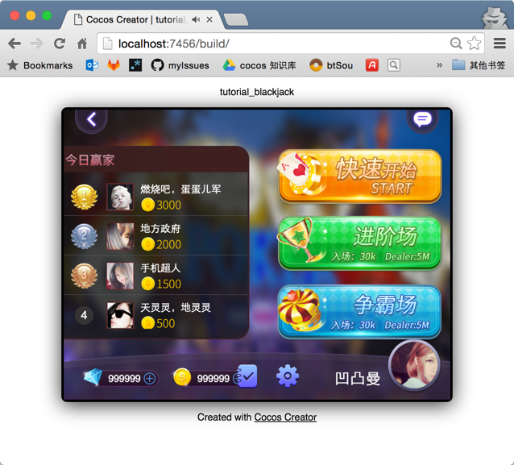

发布到 Web 平台
打开主菜单的 文件/构建发布，打开构建发布窗口。
Cocos Creator 提供了两种 Web 平台的页面模板，可以通过 发布平台 的下拉菜单选择 Web Mobile 或 Web Desktop，他们的区别主要在于 Web Mobile 会默认将游戏视图撑满整个浏览器窗口，而 Web Desktop 允许在发布时指定一个游戏视图的分辨率，而且之后游戏视图也不会随着浏览器窗口大小变化而变化。
发布路径
通过在 发布路径 输入框输入路径或通过 ... 浏览按钮直接选择，我们可以为游戏指定一个发布路径，后续的多平台发布都会在这个发布路径中的子文件夹中创建资源或工程。
默认的发布路径在项目文件夹下的 build 文件夹中，如果您使用 git、svn 等版本控制系统，可以将 build 文件夹在版本控制中忽略。
构建和预览
Web 平台的构建非常简单，就是把游戏项目和资源库中的脚本和资源进行压缩后复制到指定的发布路径中。如果需要调试，也可以开启 调试模式 的选项，这样构建出的版本会保留 sourcemap。
点击 构建 按钮，开始 Web 平台版本构建。面板上方会出现一个进度条，当进度条达到 100% 完成度时，构建就完成了。
接下来可以点击 运行预览 按钮，在浏览器中打开构建后的游戏版本进行预览和调试。

上图所示就是 Web Desktop 模式的预览，可以看到游戏视图是固定分辨率的，不会占满整个浏览器窗口。
发布到 Web 服务器
要在互联网上发布或分享您的游戏，只要点击 发布路径 旁边的 打开 按钮，打开发布路径之后，将构建出的 web-mobile 或 web-desktop 文件夹里的内容整个复制到您的 Web 服务器上就可以通过相应的地址访问了。
关于 Web 服务器的架设，可以自行搜索 Apache、Nginx、IIS、Express 等相关解决方案。
要了解如何发布游戏到原生平台，请继续前往 安装配置 Cocos Framework 说明文档。